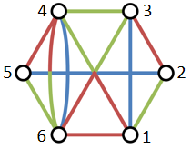

| Copyright | (c) Sebastian Tee 2022 |
|---|---|
| License | MIT |
| Maintainer | github.com/SebTee |
| Safe Haskell | Safe-Inferred |
| Language | Haskell2010 |
ParseBCG
Description
Library for parsing strings into BCG
Synopsis
Documentation
parse :: String -> Either (ParseException, Int) BCG Source #
Parse a string into BCG
Each line of the string represents an edge. Each line is made up of 6 elements in a specific order separated by spaces.
The elements are
- vertex_id_0
- colour_id_0
- vertex_id_1
- colour_id_1
- weight_real_part
- weight_imaginary_part
Example
1 green 2 green 1 0 1 blue 3 blue 1 0 1 red 4 green 0 1 1 red 6 red 1 0 2 red 3 red 1 0 2 blue 5 blue 1 0 3 green 4 green 1 0 3 green 6 red 0 1 4 red 5 red 1 0 4 red 6 green 0 1 4 blue 6 blue 1 0 5 green 6 green 1 0

data ParseException Source #
Exceptions returned by the parser
Constructors
| IncorrectNumberOfParameters | The line has an incorrect number of parameters |
| ComplexNumberParseFailure | The real or imaginary part of the complex number couldn't be parsed into |
Instances
| Show ParseException Source # | |
Defined in ParseBCG Methods showsPrec :: Int -> ParseException -> ShowS # show :: ParseException -> String # showList :: [ParseException] -> ShowS # | |